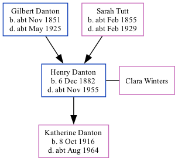

Henry Johnson Danton 1882 - c1955
[ Home ] | [ Calendar ] | [ Surnames Index ] | [ Family History ]An engine room leading hand and the son of Gilbert Danton (a gas stoker) and Sarah TuttHenry Danton, the first cousin twice-removed on the father's side of Nigel Horne, was born in Margate, Kent, England on Dec 6, 18821,2,3,4 and married Clara Winters (with whom he had 1 child, Katherine, ) in New Zealand in 1913.
Throughout his life, Henry lived in several places: at Ledbury Street, Peckham, London, England on Apr 5, 18915; at 10 Lochnagar Street, Poplar, London on Nov 1, 1916; and at 2/3 British Sailors Society, Orchard Place, Southampton, Hampshire, England on Sep 29, 19391. He served in the army from 1914 to 1920 (soldier Number: 949, Rank: Corporal, Corps: Royal Field Artillery).
He died c. Nov 1955 in Poplar, London, England4.
Parents
- Gilbert Johnson was born c. Nov 1851
- Sarah Maria was born c. Feb 1855
Children
- Katherine was born on Oct 8, 1916
Citations
- 1939 Register - Findmypast (was recorded at this address)
- Britain, Campaign, Gallantry & Long Service Medals & Awards - Findmypast
- England & Wales births 1837-2006 - Findmypast
- England & Wales deaths 1837-2007 - Findmypast
- 1891 England, Wales & Scotland Census - Findmypast (was age 8 and the son of the head of the household)
Media
England & Wales deaths 1837-2007 Transcription - BMD-D-1955-4-AZ-000237-033
England & Wales births 1837-2006 - BMD/B/1883/1/AZ/000147/201
Medal Index Cards Transcription - GBM-MCI-1094193
1891 England, Wales & Scotland Census - GBC/1891/0004077287
British Merchant Navy, First World War Medal Cards 1914-1925 Transcription - GBM-BT351-112017
Family Tree
Generated by ged2site. Last updated on Nov 13, 2024